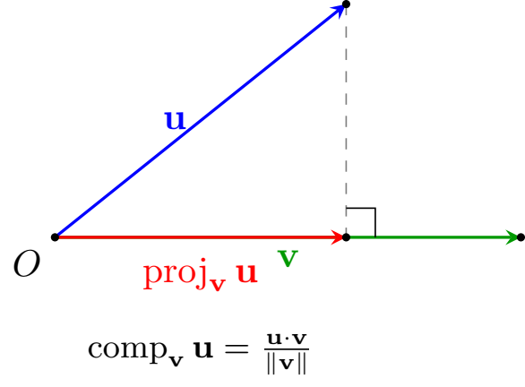

The Dot Product & Orthogonality
Algebraic Definition and Properties
While vector addition and scalar multiplication produce new vectors, the dot product (or standard Euclidean inner product) pairs two vectors to produce a real number (s[...]
For vectors \(\vec{u} = \langle u_1, u_2, \dots, u_n \rangle\) and \(\vec{w} = \langle w_1, w_2, \dots, w_n \rangle\) in \(\mathbb{R}^n\), their dot product is the [...] \[ \vec{u} \cdot \vec{w} := \sum_{i=1}^n u_i w_i = u_1w_1 + u_2w_2 + \dots + u_nw_n \]
Compute the dot product for each pair of vectors:
- \(\vec{u} = \langle 2, 5 \rangle\) and \(\vec{w} = \langle -2, 4 \rangle\)
- \(\vec{a} = 4\hat{i} - \hat{j} + 3\hat{k}\) and \(\vec{b} = 2\hat{i} + 3\hat{j} - \hat{k}\)
- \(\vec{u} \cdot \vec{w} = (2)(-2) + (5)(4) = -4 + 20 = 16\)
- \(\vec{a} \cdot \vec{b} = (4)(2) + (-1)(3) + (3)(-1) = 8 - 3 - 3 = 2\)
Algebraic Laws
Directly from the field axioms of \(\mathbb{R}\), the dot product satisfies the following identities for all \(\vec{u}, \vec{v}, \vec{w} \in \mathbb{R}^n\) and \(\lambda \in \mathbb{R}[...]
- Symmetry (Commutativity): \(\vec{u} \cdot \vec{w} = \vec{w} \cdot \vec{u}\)
- Bilinearity (Distributivity): \(\vec{u} \cdot (\vec{v} + \vec{w}) = \vec{u} \cdot \vec{v} + \vec{u} \cdot \vec{w}\)
- Homogeneity: \((\lambda\vec{u}) \cdot \vec{w} = \lambda(\vec{u} \cdot \vec{w})\)
- Positive Definiteness: \(\vec{u} \cdot \vec{u} = \|\vec{u}\|^2 \ge 0\), with equality if and only if \(\vec{u} = \mathbf{0}\).
Geometric Characterization: Angles
By applying the Law of Cosines to the triangle formed by displacement vectors \(\vec{u}\), \(\vec{w}\), and \(\vec{u}-\vec{w}\), the purely algebraic coordinate formula links directly [...]
If \(\theta \in [0, \pi]\) is the angle between non-zero vectors \(\vec{u}\) and \(\vec{w}\), then:
\[ \vec{u} \cdot \vec{w} = \|\vec{u}\|\|\vec{w}\|\cos\theta \]Solving for \(\cos\theta\) allows us to determine the angle between any two directional displacements without constructing physical triangles:
\[ \cos\theta = \frac{\vec{u} \cdot \vec{w}}{\|\vec{u}\|\|\vec{w}\|} = \left(\frac{\vec{u}}{\|\vec{u}\|}\right) \cdot \left(\frac{\vec{w}}{\|\vec{w}\|}\right) \]That is, \(\cos\theta\) is simply the dot product of the respective unit direction vectors.
Find the angle between \(\vec{a} = \langle 1, 1, 0 \rangle\) and \(\vec{b} = \langle 0, 1, 1 \rangle\).
Compute the components:
\[ \vec{a} \cdot \vec{b} = (1)(0) + (1)(1) + (0)(1) = 1 \] \[ \|\vec{a}\| = \sqrt{1^2 + 1^2 + 0^2} = \sqrt{2}, \quad \|\vec{b}\| = \sqrt{0^2 + 1^2 + 1^2} = \sqrt{2} \] \[ \cos\theta = \frac{\vec{a} \cdot \vec{b}}{\|\vec{a}\|\|\vec{b}\|} = \frac{1}{\sqrt{2}\sqrt{2}} = \frac{1}{2} \]Since \(\cos\theta = \frac{1}{2}\) and \(\theta \in [0, \pi]\), we find \(\theta = \frac{\pi}{3} = 60^\circ\).
Orthogonality
Two vectors \(\vec{u}\) and \(\vec{w}\) are orthogonal (perpendicular, written \(\vec{u} \perp \vec{w}\)) if and only if:
\[ \vec{u} \cdot \vec{w} = 0 \]For non-zero vectors, this corresponds precisely to \(\cos\theta = 0 \iff \theta = \frac{\pi}{2}\). The zero vector \(\mathbf{0}\) is by definition orthogonal to every vector in the sp[...]
Determine whether each pair of vectors is orthogonal:
- \(\vec{u} = \langle 1, 2, 3 \rangle\) and \(\vec{v} = \langle 4, -5, 2 \rangle\)
- \(\vec{u} = 2\hat{i} - 5\hat{j}\) and \(\vec{v} = 5\hat{i} + 2\hat{j}\)
- \(\vec{u} \cdot \vec{v} = (1)(4) + (2)(-5) + (3)(2) = 4 - 10 + 6 = 0\).
Because their dot product is zero, \(\vec{u} \perp \vec{v}\). - \(\vec{u} \cdot \vec{v} = (2)(5) + (-5)(2) = 10 - 10 = 0\).
The vectors are orthogonal.
Projections: Scalar and Vector
Decomposing a vector along the line determined by another vector is a fundamental operation throughout linear algebra and physics. Let \(\vec{v} \neq \mathbf{0}\).

The scalar projection (or signed component) of \(\vec{u}\) along \(\vec{v}\) is the signed length of the shadow cast by \(\vec{u}\) onto the line spanned by \(\vec[...] \[ \operatorname{comp}_{\vec{v}}\vec{u} = \|\vec{u}\|\cos\theta = \frac{\vec{u} \cdot \vec{v}}{\|\vec{v}\|} \]
The vector projection of \(\vec{u}\) onto \(\vec{v}\) is the actual vector displacement along the direction \(\hat{v}\):
\[ \operatorname{proj}_{\vec{v}}\vec{u} = \left(\operatorname{comp}_{\vec{v}}\vec{u}\right)\hat{v} = \left(\frac{\vec{u} \cdot \vec{v}}{\|\vec{v}\|}\right)\frac{\vec{v}}{\|\vec{v}\|} [...]Let \(\vec{u} = \langle 4, -1, 2 \rangle\) and \(\vec{v} = \langle -2, 3, 5 \rangle\). Find:
- The scalar projection \(\operatorname{comp}_{\vec{v}}\vec{u}\).
- The vector projection \(\operatorname{proj}_{\vec{v}}\vec{u}\).
Compute intermediate quantities:
\[ \vec{u} \cdot \vec{v} = (4)(-2) + (-1)(3) + (2)(5) = -8 - 3 + 10 = -1 \] \[ \|\vec{v}\|^2 = (-2)^2 + 3^2 + 5^2 = 4 + 9 + 25 = 38 \implies \|\vec{v}\| = \sqrt{38} \]- \(\operatorname{comp}_{\vec{v}}\vec{u} = \frac{\vec{u} \cdot \vec{v}}{\|\vec{v}\|} = -\frac{1}{\sqrt{38}}\)
- \(\operatorname{proj}_{\vec{v}}\vec{u} = \left(\frac{\vec{u} \cdot \vec{v}}{\|\vec{v}\|^2}\right)\vec{v} = -\frac{1}{38}\langle -2, 3, 5 \rangle = \left\langle \frac{1}{19},\ [...]
Application: Mechanical Work
In classical mechanics, work measures energy transfer. When a constant force \(\vec{F}\) acts on a body undergoing a straight displacement \(\vec{D} = \overrightarrow{PQ}\), only the c[...] \[ W = \left(\operatorname{comp}_{\vec{D}}\vec{F}\right)\|\vec{D}\| = \left(\|\vec{F}\|\cos\theta\right)\|\vec{D}\| = \vec{F} \cdot \vec{D} \]
A sled moves \(10\text{ m}\) due east along a displacement \(\vec{D} = \langle 10, 0 \rangle\text{ m}\). A tow rope exerts a constant pulling force \(\vec{F} = \langle 6, 8 \rangle[...]